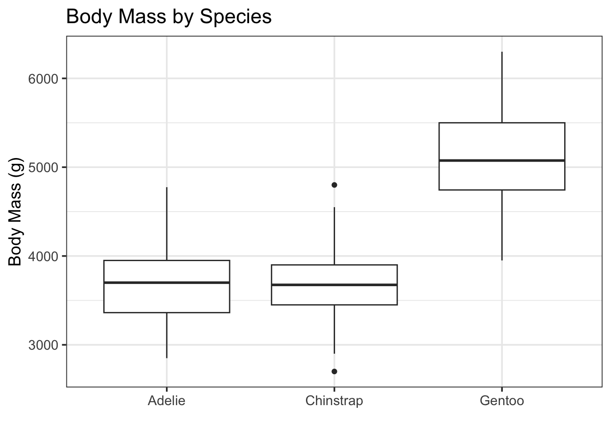
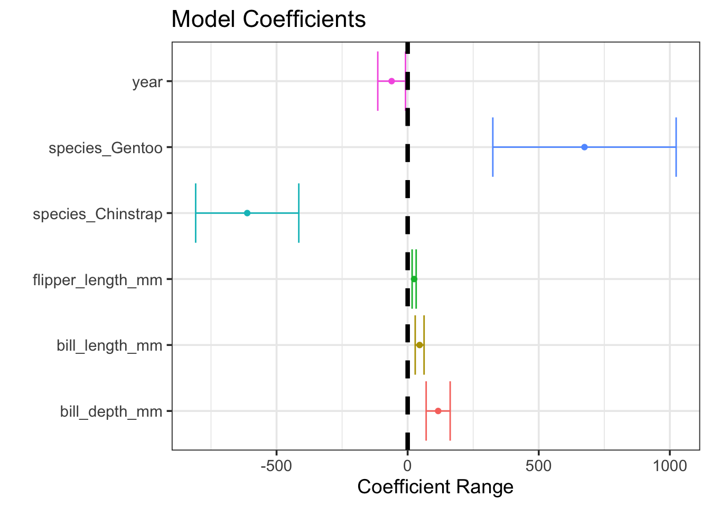

library(tidyverse)
library(tidymodels)
library(palmerpenguins)
library(patchwork)
library(kableExtra)
tidymodels_prefer()
options(kable_styling_bootstrap_options = c("hover", "striped"))
theme_set(theme_bw(base_size = 14))
penguins <- palmerpenguins::penguins
set.seed(123)
penguins_split <- initial_split(penguins)
penguins_train <- training(penguins_split)
penguins_test <- testing(penguins_split)Utilizing Categorical Predictors
Objectives
In our recent notebooks, we’ve attempted to predict the body mass of penguins. In doing so, we’ve utilized only numerical features as predictors. In this notebook, we’ll extend our ability to build models by adding categorical predictors to our repertoire. After working through this notebook, you should be able to:
- Interpret a series of dummy variable columns as they relate to a categorical variable in a data set.
- Identify the base-level of a categorical variable by looking at its corresponding dummy variable columns.
- Use
step_dummy()in conjunction with arecipe()to create dummy variables from a categorical variable. - Interpret the coefficient of a term involving a dummy variable in a model.
Linear Regression Models
As a reminder, linear regression models are of the form \(\mathbb{E}\left[y\right] = \beta_0 + \beta_1\cdot x_1 + \beta_2\cdot x_2 +\cdots + \beta_k\cdot x_k\). This works just fine when \(x_1,~x_2,~\cdots,~x_k\) are numerical variables – we can certainly multiply and add numbers together. What happens, however, when we want to use categorical variables in a model. What might the meaning of \(2\cdot\left(\text{gentoo}\right)\) be?
Motivating Use of Categorical Variables
Categorical variables can be really valuable predictors. Leaving them out of models can leave lots of predictive and explanatory power on the table. Let’s just look at a plot of penguin body mass by species to really understand the value of species as a predictor.
penguins_train %>%
ggplot() +
geom_boxplot(aes(x = species, y = body_mass_g)) +
labs(title = "Body Mass by Species",
x = "",
y = "Body Mass (g)")Warning: Removed 2 rows containing non-finite outside the scale range
(`stat_boxplot()`).
Visually, we see that the Gentoo penguins are much more massive than the Adelie and Chinstrap penguins.
Categorical Variables and Dummy Variables
Categories can’t be plugged into linear regression models directly, because linear regression models rely on the operations of multiplication and addition to predict a response. For this reason, we’ll need a way to convert categorical variables into a numerical alternative. There are lots of ways this can be done, but the simplest is to create a corresponding set of dummy variables. These dummy variables are like light switches – they can be turned on or off, and at most one light switch can be turned on at a time. See the example below:
penguins_train %>%
head() %>%
select(species) %>%
mutate(species_gentoo = ifelse(species == "Gentoo", 1, 0),
species_adelie = ifelse(species == "Adelie", 1, 0),
species_chinstrap = ifelse(species == "Chinstrap", 1, 0)) %>%
kable() %>%
kable_styling()| species | species_gentoo | species_adelie | species_chinstrap |
|---|---|---|---|
| Gentoo | 1 | 0 | 0 |
| Adelie | 0 | 1 | 0 |
| Gentoo | 1 | 0 | 0 |
| Chinstrap | 0 | 0 | 1 |
| Adelie | 0 | 1 | 0 |
| Chinstrap | 0 | 0 | 1 |
Notice that the species_gentoo column indicates via a \(1\) that the penguin is a Gentoo, or uses a \(0\) to indicate that the penguin is not a Gentoo. The other columns are similar. Because no penguin can be of more than one species, and each penguin is exactly one of Gentoo, Adelie, or Chinstrap, this encoding does exactly what we want. We can plug \(0\)s and \(1\)s into our regression model. Furthermore, we don’t need all of these new dummy variables, since knowing that a penguin is not a Gentoo and is not an Adelie guarantees that the penguin is a Chinstrap. We can see this below.
penguins_train %>%
head() %>%
select(species) %>%
mutate(species_gentoo = ifelse(species == "Gentoo", 1, 0),
species_chinstrap = ifelse(species == "Chinstrap", 1, 0)) %>%
kable() %>%
kable_styling()| species | species_gentoo | species_chinstrap |
|---|---|---|
| Gentoo | 1 | 0 |
| Adelie | 0 | 0 |
| Gentoo | 1 | 0 |
| Chinstrap | 0 | 1 |
| Adelie | 0 | 0 |
| Chinstrap | 0 | 1 |
I’ve removed the Adelie category, but the idea is the same. That penguin in the second row is not a Gentoo and is not a Chinstrap, so it must be an Adelie. We don’t need the original species column to recover that information.
I removed the species_Adelie dummy variable because the Adelie level comes first alphabetically. This is the same choice R will make unless we tell it to do otherwise. We’ll highlight reasons you might make other choices later in this notebook. For now, let’s see how to create dummy variables the tidymodels way instead of this manual method I’ve just used.
Building a Model With Categorical Variables
The way we build models that include categorical variables is exactly the same way as we built simple and multiple linear regression models in the notebooks prior. The only change we’ll be making is that we are going to add a step_*() to our recipe(). The tidymodels framework includes lots of step_*() functions which allow us to transform our predictors. The step_dummy() function allows us to create dummy variables in place of a categorical predictor, and it is the first of the step_*() functions we’ll encounter.
Fitting A Model With A Categorical Predictor
In our last notebook, we ended with a model that included only flipper_length_mm and year as significant predictors of body_mass_g. Let’s go back to the “full” model, including all of the numerical predictors as well as the species variable as a starting point.
mass_reg_spec <- linear_reg() %>%
set_engine("lm")
mass_reg_rec <- recipe(body_mass_g ~ bill_length_mm + bill_depth_mm + flipper_length_mm + year + species, data = penguins_train) %>%
step_dummy(species)
mass_reg_wf <- workflow() %>%
add_model(mass_reg_spec) %>%
add_recipe(mass_reg_rec)
mass_reg_fit <- mass_reg_wf %>%
fit(penguins_train)There it is – just like before! The only difference is the additional step_dummy() in our recipe().
Assessing Our Fitted Model
Now that we have our fitted model, let’s assess it and reduce the model if necessary.
mass_reg_fit %>%
glance() %>%
kable() %>%
kable_styling()| r.squared | adj.r.squared | sigma | statistic | p.value | df | logLik | AIC | BIC | deviance | df.residual | nobs |
|---|---|---|---|---|---|---|---|---|---|---|---|
| 0.850892 | 0.847299 | 320.6405 | 236.8218 | 0 | 6 | -1836.902 | 3689.803 | 3718.165 | 25599765 | 249 | 256 |
The p.value for our global test of model utility is very small, indicating that at least one of the variables in our model is a statistically significant predictor of body_mass_g. Now let’s move to a term-by-term analysis.
mass_reg_fit %>%
extract_fit_engine() %>%
tidy() %>%
kable() %>%
kable_styling()| term | estimate | std.error | statistic | p.value |
|---|---|---|---|---|
| (Intercept) | 117741.34928 | 52923.855404 | 2.224731 | 0.0269960 |
| bill_length_mm | 45.68811 | 8.453182 | 5.404841 | 0.0000002 |
| bill_depth_mm | 116.33674 | 22.899361 | 5.080349 | 0.0000007 |
| flipper_length_mm | 24.73435 | 3.853005 | 6.419495 | 0.0000000 |
| year | -61.06663 | 26.441028 | -2.309541 | 0.0217324 |
| species_Chinstrap | -611.87027 | 98.338482 | -6.222084 | 0.0000000 |
| species_Gentoo | 674.46469 | 174.809962 | 3.858274 | 0.0001455 |
When accounting for different baseline body mass per species, all of the other available features are statistically significant! This highlights an important idea – just because a predictor is not statistically significant doesn’t mean that it is unrelated to the response variable or is not useful in making predictions. A visual representation of confidence intervals for our fitted model coefficients appears below.
mass_reg_fit %>%
extract_fit_engine() %>%
tidy() %>%
filter(term != "(Intercept)") %>%
ggplot() +
geom_errorbarh(aes(xmin = estimate - 2*std.error,
xmax = estimate + 2*std.error,
y = term,
color = term),
show.legend = FALSE) +
geom_point(aes(x = estimate,
y = term,
color = term),
show.legend = FALSE) +
geom_vline(xintercept = 0,
linetype = "dashed",
lwd = 1.5) +
labs(title = "Model Coefficients",
x = "Coefficient Range",
y = "")Warning: `geom_errorbarh()` was deprecated in ggplot2 4.0.0.
ℹ Please use the `orientation` argument of `geom_errorbar()` instead.
All of our predictors were useful were useful, we just needed to account for the differences in species to see that!
Interpreting Our Model
Since we’ve got our model now and all of the predictors are statistically significant, let’s draw some inferences from it.
mass_reg_fit %>%
extract_fit_engine() %>%
tidy() %>%
kable() %>%
kable_styling()| term | estimate | std.error | statistic | p.value |
|---|---|---|---|---|
| (Intercept) | 117741.34928 | 52923.855404 | 2.224731 | 0.0269960 |
| bill_length_mm | 45.68811 | 8.453182 | 5.404841 | 0.0000002 |
| bill_depth_mm | 116.33674 | 22.899361 | 5.080349 | 0.0000007 |
| flipper_length_mm | 24.73435 | 3.853005 | 6.419495 | 0.0000000 |
| year | -61.06663 | 26.441028 | -2.309541 | 0.0217324 |
| species_Chinstrap | -611.87027 | 98.338482 | -6.222084 | 0.0000000 |
| species_Gentoo | 674.46469 | 174.809962 | 3.858274 | 0.0001455 |
We can write our estimated model as follows: \[\begin{align}\mathbb{E}\left[\text{body\_mass\_g}\right] \approx &117741.35 + 45.69\left(\text{bill\_length\_mm}\right) + 116.34\left(\text{bill\_depth\_mm}\right) +\\ &24.73\left(\text{flipper\_length\_mm}\right) - 61.07\left(\text{year}\right) - 611.87\left(\text{species\_Chinstrap}\right) +\\ &674.46\left(\text{species\_Gentoo}\right)\end{align}\]
We can interpret each of these terms just like in our simple or multiple linear regression models. For example, holding all other variables constant, an increase in flipper length by \(1\) millimeter is associated with an expected additional \(24.73\) grams of penguin body mass, on average. The new thing here is how we’ll interpret the coefficients on those dummy variables for species.
Notice that the Adelie species is missing from our model. As we discussed earlier, this means that Adelie is the base level for the species variable. Because of this, we’ll interpret all of the other levels with respect to the Adelie penguins.
- Since the coefficient on
species_Chinstrapis \(-611.87\), we expect that the difference in body mass between otherwise similar Adelie and Chinstrap penguins will be that the Chinstrap has a mass of \(611.87\) grams less, on average. - Since the coefficient on
species_Gentoois \(647.46\), we expect the difference in body mass between otherwise similar Adelie and Gentoo penguins will be that the Gentoo has a mass of \(647.46\) grams more, on average. - From the coefficients we can infer that, on average,
Chinstrappenguins are the smallest, whileGentoos are the largest.
Making Predictions and Assessing Performance
As a reminder, the Adjusted R Squared (adj.r.squared) and Residual Standard Error (sigma) metrics computed for the overall model are biased. This is the case because they are computed using the training data, where the model is able to see the true values of the response. Let’s compute R Squared and the root mean squared error (rmse) on both the training and test sets.
my_metrics <- metric_set(rsq, rmse)
(mass_reg_fit %>%
augment(penguins_train) %>%
select(body_mass_g, .pred) %>%
my_metrics(body_mass_g, .pred) %>%
mutate(type = "training")
) %>%
bind_rows(
mass_reg_fit %>%
augment(penguins_test) %>%
select(body_mass_g, .pred) %>%
my_metrics(body_mass_g, .pred) %>%
mutate(type = "test")
) %>%
pivot_wider(id_cols = .metric,
names_from = type,
values_from = .estimate) %>%
kable() %>%
kable_styling(bootstrap_options = c("hover", "striped"))| .metric | training | test |
|---|---|---|
| rsq | 0.850892 | 0.8428805 |
| rmse | 316.226315 | 297.3192546 |
We can see that the R Squared metric is similar across the training and test sets. As we noted in the multiple linear regression notebook, the test RMSE is slightly lower than the training RMSE. Again, this is due to our test set containing mainly typical penguins, and fewer difficult penguins to predict body mass for.
Note, however, that this new model is an enormous improvement over our previous models. In terms of R Squared, our model now explains around 85% of the variation in penguin body mass. In terms of predictive value, our model is now expected to have a typical prediction error on the order of 297.5g or 316g. These are big improvements over our multiple linear regression model which did not account for the penguin species.
Summary
With respect to coding, the only new thing we introduced in this notebook was the use of step_dummy() in conjunction with a recipe(). We can use step_dummy() with any categorical variable in a model. It will create a set of dummy variables which can be utilized in a model – the dummy variables are numeric indicators for each level of a categorical variable. One level will not correspond to a dummy variable and that level will be the base level. All of the model coefficients attached to dummy variables can be interpreted with respect to the base level.
Now you can use both numerical and categorical predictors in your regression models!